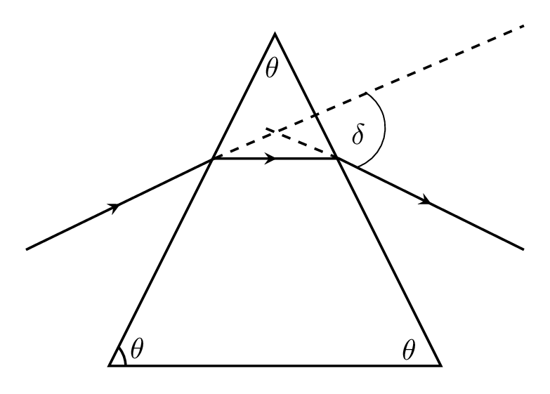
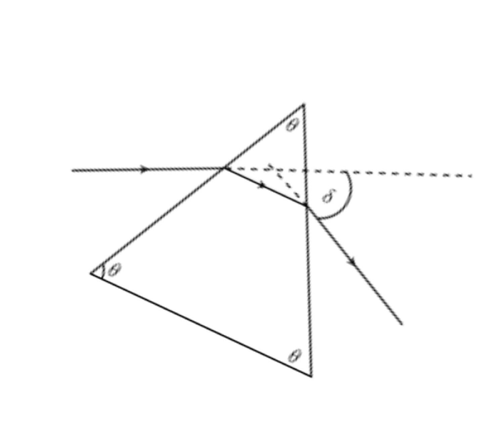

An object of height 1 cm is located at a distance 20 cm in front of a concave mirror of focal length 10 cm.
What is the radius of curvature of the mirror?
Where is the image located?
Is the image real or virtual?
What is the magnification of the mirror?
Is the image enlarged or reduced?
What is the height of the image?
Is the image erect or inverted?
2.
An object of height 1 cm is located at a distance 15 cm in front of a concave mirror of focal length 10 cm.
What is the radius of curvature of the mirror?
Where is the image located?
Is the image real or virtual?
What is the magnification of the mirror?
Is the image enlarged or reduced?
What is the height of the image?
Is the image erect or inverted?
3.
An object of height 1 cm is located at a distance 10 cm in front of a concave mirror of focal length 10 cm.
What is the radius of curvature of the mirror?
Where is the image located?
Is the image real or virtual?
What is the magnification of the mirror?
Is the image enlarged or reduced?
What is the height of the image?
Is the image erect or inverted?
4.
An object of height 1 cm is located at a distance 5 cm in front of a concave mirror of focal length 10 cm.
What is the radius of curvature of the mirror?
Where is the image located?
Is the image real or virtual?
What is the magnification of the mirror?
Is the image enlarged or reduced?
What is the height of the image?
Is the image erect or inverted?
5.
An object of height 1 cm is located at a distance 30 cm in front of a convex mirror of focal length 10 cm.
What is the radius of curvature of the mirror?
Where is the image located?
Is the image real or virtual?
What is the magnification of the mirror?
Is the image enlarged or reduced?
What is the height of the image?
Is the image erect or inverted?
6.
An object of height 1 cm is located at a distance 30 cm in front of a concave mirror of focal length 10 cm.
What is the radius of curvature of the mirror?
Where is the image located?
Is the image real or virtual?
What is the magnification of the mirror?
Is the image enlarged or reduced?
What is the height of the image?
Is the image erect or inverted?
7.
An object of height 1 cm is located at a distance 30 cm in front of a plane mirror.
What is the radius of curvature of the mirror?
Where is the image located?
Is the image real or virtual?
What is the magnification of the mirror?
Is the image enlarged or reduced?
What is the height of the image?
Is the image erect or inverted?
8.
A spherical concave shaving mirror has a radius of curvature of 30 cm. A person is located 10 cm in front of the mirror.
Where is the image of the person’s face located?
Is the image real or virtual?
How much is the person’s face magnified?
Is the image erect or inverted?
9.
A person of height 1.5 m looks at his image in a Christmas tree ornament 10 cm in diameter. If he is 2 m from the ornament,
what is the height of his image?
Is it erect or inverted?
Is it real or virtual?
10.
An object of height 1 cm is located at a distance 30 cm in front of a concave mirror of focal length 10 cm.
What is the radius of curvature of the mirror?
Where is the image located?
Is the image real or virtual?
What is the magnification of the mirror?
Is the image enlarged or reduced?
What is the height of the image?
Is the image erect or inverted?
Refraction.
11.
A cylindrical glass rod of index 1.5 is immersed in water of index 1.33. A fish of length 1 cm is located in the water along the axis of the cylinder and 20 cm from the end of the rod which is polished into a concave surface of radius 10 cm.
What is the focal length of the refracting surface? Is it converging or diverging.
Where is the image of the fish located? Is the image real or virtual?
What is the length of the image? Is the image enlarged or reduced? Erect or inverted?
12.
A thin concavo-convex lens has its concave surface of radius 20 cm and its convex surface of radius 10 cm. Its index of refraction is 1.5, and an object of height 5 cm is located 50 cm in front of the concave side of the lens along its principle axis.
What is the focal length of the lens? Is it converging or diverging?
Where is the image of the light bulb located? Is the image real or virtual?
What is the height of the image? Is the image enlarged or reduced? Erect or inverted?
13.
The left end of a long glass rod 4 cm in diameter is polished to a convex surface of radius 10 cm. The index of refraction of the glass is 1.50. An object 2 cm tall is located 20 cm to the left of the rod along its axis. Find
the location and
size of the image.
Describe the image. Is it inside or outside the rod? Real or virtual? Erect or inverted? Enlarged or reduced?
14.
A speck of dirt embedded in a sheet of ice appears to be 5 cm below the surface and 4 mm long. If the index of refraction of ice is 1.309, what is
the actual depth of the speck and
its true length.
15.
A fish tank whose bottom is a mirror is filled with water to a depth of 20 cm. A small fish 2 cm long is swimming 9 cm below the surface of the water. When viewed from above, both the fish and its image reflected from the bottom can be viewed.
What is the apparent depth of the fish below the surface of the water?
What is the apparent size of the reflected image?
16.
Light of wavelength 500 nm is incident normally on the thin film of a soap bubble. If the film has an index of refraction of 1.33 and a thickness of 10 wavelengths, what is the thickness of the film in meters?
17.
A \(45-90-45^{o}\) prism has an index of refraction of 1.5 and is located in air.
What is the critical angle for a light ray inside the prism.
Will a light ray entering the prism normal to one face be totally reflected from the next face?
If not, what will be the angle of refraction?
18.
A \(45-90-45^{o}\) prism has an index of refraction of 1.5 and is immersed in a liquid of index 1.3.
What is the critical angle for a light ray inside the prism?
Will a light ray entering the prism normal to one face be totally reflected from the next face?
If not, what will be the angle of refraction?
19.
A ray of light of wavelength 500 nm strikes a window at a \(20^{o}\) angle with the surface. If the window glass is flat, has an index of refraction of 1.5, and is 5 mm thick,
what is the angular displacement of the light ray as it goes through the window (how much does the light ray change directions)?
What is the lateral displacement of the ray as it goes through the window (how much does it shift sideways)?
20.
Calculate the focal length of a double convex lens, for which the radius of curvature of each surface is 50 cm and the refractive index of glass is 1.5.
21.
Calculate the focal length of a plano convex lens, the radius of curvature of a convex surface is 40 cm and the refractive index of glass is 1.5.
22.
A ray of light from the sun enters a solid sphere of glass parallel to its axis. The sphere has a diameter of 30 cm and refractive index of glass is 1.5. Find the position of the image of sun.
23.
A light ray of wavelength 600 nm enters an equilateral prism such that the ray inside the prism is parallel to one of the faces as shown at right. Whenever this happens, the angle of deviation \(\delta\) between the incoming ray and the outgoing ray is a minimum. What is the minimum angle of deviation for such a prism having an index of refraction of 1.6?

24.
A horizontal light ray of wavelength 400 nm enters the surface of an equilateral prism and exits the opposite surface which is vertical as shown below. If the index of refraction of the prism is 1.6, what is the angle of deviation \(\delta\) between the incoming light ray and the outgoing light ray?

25.
The two surfaces of a double concave lens has radii of curvature 10 cm and 30 cm. Find its focal length in water. \(n_{w} =1.33,\quad n_{g}=1.5.\)
26.
Two convex lenses having focal lengths 6 cm and 2 cm are coaxially attached together. Calculate the focal length of the combination. Given: \(n_{g}=1.5.\)
27.
Calculate the focal lengths of a convex lens of crown glass (\(\omega_{c} =0.012\)) and a concave lens of flint glass (\(\omega_{f} =0.020\)) so that when placed in contact they form an achromatic combination of focal length 30 cm.
Optical Instruments.
28.
An object of height 10 cm is placed 2 m in front of a converging lens of focal length 20 cm. The light passes through that lens and then through a diverging lens of focal length 5 cm.
What is the distance between the two lenses if the final image is virtual and 25 cm from the diverging lens?
What is the height of the final image?
29.
A microscope 30 cm long is constructed from two lenses each of focal length 1 cm.
What is the magnifying power (angular magnification) of the microscope?
What would be the apparent size of a flee which is 1 mm in actual length?
If the angular view through the eyepiece is \(45^o\text{,}\) could you see the whole flee in the microscope?
30.
The picture size of a 35-mm camera is normally \(24 \,mm \times 36 \,mm\text{.}\)
What focal length lens should be used to fill the picture with a hang glider at an altitude of 500 ft if the wingspan of the glider is 40 ft?
If the lens setting is f/11, what is the diameter of the opening in the lens diaphragm?
31.
A 35-mm slide projector projects a slide \(24 \,mm \times 36 \,mm\) onto a screen 2 m wide and 20 m away.
What is the focal length of the projectors lens?
If it is 5 cm in diameter, what is its f-number?
What is the height of the projected image?
32.
A microscope consists of two converging lenses each of focal length 1.00 cm located 20 cm apart. An object 1 mm long is placed in front of the first lens at such a distance that the final image (from the second lens) falls on top of the object. In other words, the object and its final image are at the same location.
What is the object distance for the first lens?
What is the size of the first image?
What is the magnification of the microscope?
If the index of refraction of each lens is 1.50 and they are symmetrical, what is the radius of curvature of each lens surface?
If a thin non-reflecting coating of \(S_{i}O (n=1.45)\) is placed on each lens surface, what is the minimum thickness of such a coat in order that green light of wavelength 550 nm is not reflected?
33.
A clear crystal ball of diameter 20 cm is made from solid glass of index of refraction 1.5. A fortune teller looks through the ball at an object 10 cm high located on the other side of the ball 50 cm from the center of the ball. Light travels from the object through the ball so as to form a final image.
Where is this final image located?
What is the magnification of the complete optical system?
What is the height of the final image?
34.
A reflecting telescope has a primary mirror of diameter 20 cm and radius of curvature 2 m. If the telescope is pointed at the moon, 3480 km in diameter and 386,000 km away, find
the location of the moon’s image and
the size of the moon’s image.
Describe the moon’s image. Is it real or virtual, erect or inverted, enlarged or reduced, normal or perverted?
35.
The primary lens of a refracting telescope is 20 cm in diameter and has a focal length of 1 m. If the telescope is pointed at a bird 20 cm long and 20 m away, find
the location of the bird’s image and
the size of the bird’s image.
Describe the bird\rq s image. Is it real or virtual, erect or inverted, enlarged or reduced, normal or perverted?
36.
A thin concave-convex lens has its concave surface of radius 20 cm and its convex surface of radius 10 cm. Its index of refraction is 1.5, and an object of height 5 cm is located 50 cm in front of the concave side of the lens along its principle axis.
What is the focal length of the lens? Is it converging or diverging?
Where is the image of the object located? Is the image real or virtual?
What is the height of the image? Is the image enlarged or reduced? Erect or inverted?
37.
A short-sighted eye has a new far point of 5.00 m and a near point of 0.25 m. State the type of lens needed to correct this defect and calculate the power of the correcting lens. Calculate the distance from the lens to the new near point of the eye with the correcting lens in front of the eye.
Hint for second part: Once the glasses on eye Near point shifts further away from eye, find the object position when image disance = -0.25 m.
38.
A long-sighted eye has the far point at infinity and a near point which is 40 cm from the eye. State the type of lens needed to correct this defect and calculate the power of the correcting lens. Calculate the distance from the lens to the new far point of the eye with the correcting lens in front of the eye. Hint.
Hint for second part: Once the glasses on eye Far point shifts further away from eye, find the object position when image disance = \(-\infty \text{.}\)
39.
Find the size of the letters the normal eye can read at 6.10 m, if the criterion is that they subtend 3 arc minute visual angle. Using this information what size object is required at 10 m?
40.
A man has a far point of 2 m. Find the focal length of the corrective lens for seeing distant objects, and find the near point of this eye with corrective lens if the man has the normal near point without glasses.
41.
A person has a near point of 50 cm. Find the corrective lens required to enable this person to read at the normal distance of 25 cm.
42.
A man has a near point of 50 cm from his eyes and a far point at infinity. What is the useful accommodation power of his eyes? Consider the lens of the eye as a simple lens.
43.
A young person with a near point of 20 cm, is not able to see an object clearly if it is more than 5 m from his eye. What kind of lens should you prescribe to correct his vision?
44.
A nearsighted person wears glasses of f = -50.0 cm. Through these glasses he has perfect distant vision, but he cannot focus clearly on the objects closer than 25.0 cm. How close can he focus if he removes his glasses? What is his far point?
45.
A pair of bifocal lenses have components with focal lengths of 50 cm and -250 cm. What are the near and far points for the wearer of these bifocal lenses?
46.
An older person has a near point of 75 cm. Find the correct lenses to prescribe for this person.
47.
Calculate the magnification of an object placed 6.20 mm from a compound microscope that has a 6.00 mm focal length objective and a 50.0 mm focal length eyepiece. The objective and eyepiece are separated by 23.0 cm.
48.
A college professor can see objects clearly only if they are between 70 and 500 cm from his eyes. His optometrist prescribes bifocals that enable him to see distant objects clearly through the top half of the lenses and read students papers at a distance of 25 cm through the lower half. What are the powers of the top and bottom lenses.
49.
A 100 candle power lamp hangs 2 m above the center of a circular table of diameter 2 m. Determine the intensity of illumination at a point on the edge of the table.
Interference.
50.
In a double slit interference experiment, the spacing between the slits is 0.1 mm and the screen is at a distance of 4 m. If light of wavelength 600 nm is used, find
the location of the second dark fringe,
the location of the fifth (off axis) bright fringe,
the spacing between the fringes.
51.
A flat glass plate of length 10 cm is placed on top of a larger flat glass slab. A small grain of sand of diameter \(1 \,\mu m\) is placed under the right end of the plate to separate it from the slab. (The left end is in contact.) The index of refraction of the plate is 1.5, that of the slab is 1.6. When viewed from above and illuminated from above with light of wavelength 550 nm a series of light and dark fringes are observed.
What is the spacing between the fringes?
How far from the left end of the plate is the fourth bright fringe?
52.
A plano-convex lens of radius of curvature 1 m is placed, curved side down, on a flat glass plate and illuminated from above with light of wavelength 450 nm so as to form Newton rings.
Is a bright or a dark spot observed at the center of the rings when viewed from above?
What is the radius of the 4’th bright ring when viewed from above?
What is the radius of the 4’th bright ring when viewed from below?
53.
Two flat plates of index of refraction 1.5 are 10 cm long. At the left end they are in contact; at the right they are separated by a sheet of paper 0.010 mm thick. The space between the plates is filled with a liquid of index of refraction 1.6. When viewed from above and illuminated from above with light of wavelength 550 nm a series of light and dark fringes are observed.
What is the spacing between the fringes?
How far from the left end of the plate is the fourth bright fringe?
54.
A monochromatic point source of light of wavelength 550 nm is located 0.05 mm above the left end of a horizontal flat glass plate 20 cm long and index of refraction 1.5. Light from the source shines down on the surface of the plate and is reflected back upward so as to interfere with the light that doesn’t hit the plate.
At a point immediately above the right end of the plate will this interference be constructive or destructive? Why?
At a point located 0.05 mm above the right end of the plate will this interference be constructive or destructive? Why?
How far above the right end of the plate will the fourth bright fringe occur?
55.
Green light of wavelength \(5100 \,\overset{\circ}{A} \) from an object of height 5 cm is located at a distance 30 cm in front of a convex lens of focal length 10 cm and radii of curvature.
Where is the image located?
Is the image real or virtual?
What is the magnification of the mirror?
Is the image enlarged or reduced?
What is the height of the image?
Is the image erect or inverted? a narrow slit is incident on a double slit. If the overall separation of 10 fringes on a screen 200 cm away is 2 cm, find the slit separation.
56.
Two coherent sources are 0.18 mm apart and the fringes are absorbed on a screen 80 cm away. It is found that with a certain monochromatic source of light, the fourth bright fringe is situated at a distance of 10.8 mm from the central fringe. Calculate the wavelength of light.
57.
In Young’s double slit experiment the separation of the slits is 1.9 mm and the fringe spacing is 0.31 mm at a distance of 1 m from the slits. Calculate the wavelength of light.
58.
Two straight and narrow parallel slits 1 mm apart are illuminated by monochromatic light. Fringes formed on the screen held at a distance of 100 cm from the slits are 0.50 mm apart. What is the wavelength of light?
Diffraction.
59.
Light of wavelength 650 nm passes through a narrow slit producing a single slit diffraction pattern on a screen 5 m away. The width of the central bright fringe is 2 cm.
What is the width of the slit?
What is the distance between the dark interference fringes on either side of the bright central fringe?
How far from the central bright fringe is the third dark fringe located?
60.
White light ranging between 400 nm and 700 nm in wavelength falls at normal incident on a diffraction grating that has 400 slits/mm. What is the angular width of the visible spectrum for
first order,
second order.
What is the highest order complete spectrum for this arrangement?
Do any of the spectra overlap?
61.
Laser light of wavelength 632.8 nm shines normally on the reflective side of a compact disk whose information tracks are \(1.60 \,\mu m\) apart.
What is the highest order reflected interference beam observed?
What is the angles of reflection (measured from the normal) for the second order beam?
62.
A beam of white light shines normally on the reflective side of a compact disk whose information tracks are \(1.60 \,\mu m\) apart. What color light will be observed at an angle of \(45^{o}\) with respect to the normal?
63.
How many orders will be visible if the wavelength of the incident light is \(5000\,\overset{\circ}{A} \) and the number of lines on the grating is 2620 per inch.
64.
A parallel beam of monochromatic light is allowed to be incident normally on a plane transmission grating having 5000 lines/cm and the second order spectral line is found to be diffracted through \(30^{o}.\) Calculate the wavelength of light.